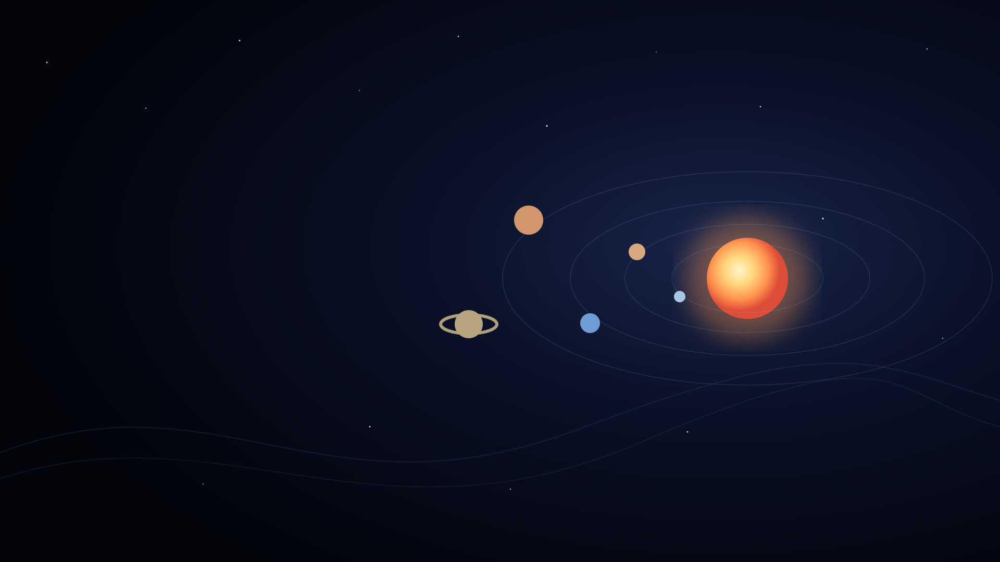
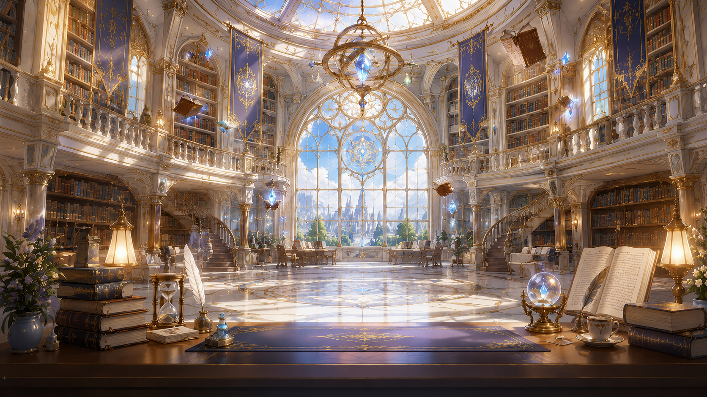

FEATURED ENVIRONMENT
皇家大魔法圖書館
GRAND ARCANE LIBRARY
以王立魔法學院的中央圖書館為核心，融合挑高穹頂、彩繪玻璃、 金色裝飾與漂浮魔法書，營造知性、溫暖且帶有奇幻層次的主播空間。
場景中央保留角色站位與鏡頭焦點，背景則透過迴廊、書架與自然光建立景深， 適合雜談、讀書、公告與世界觀企劃。
- STYLE
- 奇幻・魔法學院
- LIGHT
- 自然光＋魔法光源
- MOOD
- 知性・溫暖・優雅

VIRTUAL CREATION PORTFOLIO
探索 VROID 虛擬角色、服裝與主播背景的設計紀錄。 以簡潔視覺、近未來語彙與柔和色彩，建立可持續延伸的創作世界。

FEATURED ENVIRONMENT
GRAND ARCANE LIBRARY
以王立魔法學院的中央圖書館為核心，融合挑高穹頂、彩繪玻璃、 金色裝飾與漂浮魔法書，營造知性、溫暖且帶有奇幻層次的主播空間。
場景中央保留角色站位與鏡頭焦點，背景則透過迴廊、書架與自然光建立景深， 適合雜談、讀書、公告與世界觀企劃。
CHARACTER DEVELOPMENT
CHARACTER & COSTUME STUDY
角色造型以簡潔、不對稱與近未來感為主要方向， 使用柔和低彩度配色與俐落分割線，讓服裝保有辨識度，同時不搶走角色表情與髮型焦點。
此區將持續收錄角色外觀、上衣貼圖、UV 配置及後續服裝款式， 形成可比較、可延伸的設計資料庫。